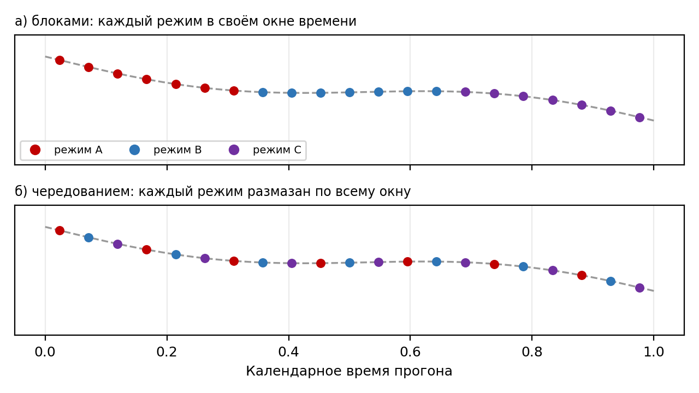
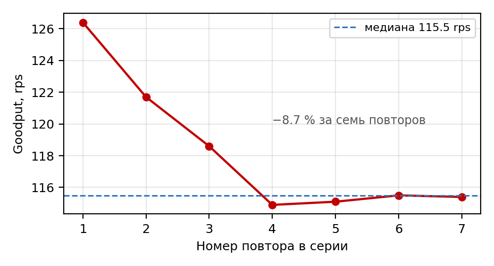

УДК 004.415.2
БОБКОВ АРТЕМ НИКОЛАЕВИЧ, СИЗОВА ОЛЬГА ВЛАДИМИРОВНА
Bobkov A. N., Sizova O.V.
ФГБОУ ВО «Ивановский государственный химико–технологический университет»
ОРГАНИЗАЦИЯ НАГРУЗОЧНОГО ЭКСПЕРИМЕНТА ПРИ СРАВНЕНИИ АДАПТИВНЫХ РЕГУЛЯТОРОВ МЯГКИХ РЕСУРСОВ: ПОРЯДОК ИЗМЕРЕНИЙ И ОТРИЦАТЕЛЬНЫЙ КОНТРОЛЬ
ORGANIZATION OF A LOAD EXPERIMENT WHEN COMPARING ADAPTIVE CONTROLLERS OF SOFT RESOURCES: MEASUREMENT ORDER AND NEGATIVE CONTROL
Аннотация
Экспериментальное сравнение адаптивных регуляторов программных систем осложнено тем, что измеряемые эффекты составляют единицы и первые десятки процентов, тогда как условия замера дрейфуют во времени: меняются загрузка вычислительной машины, её тепловое состояние, содержимое кэшей внешних подсистем. В статье показано, что распространённая организация нагрузочного эксперимента, при которой все повторы одного режима выполняются подряд, помещает каждый режим в собственное окно календарного времени и делает различие между режимами неотделимым от различия между моментами их измерения. На нагрузочном стенде библиотеки адаптивного управления мягкими ресурсами получена количественная оценка возникающего искажения: одна и та же конфигурация, измеренная в двух последовательных сериях, дала расхождение 62 %. Предложены два приёма организации эксперимента — чередование повторов между сопоставляемыми режимами и включение отрицательного контроля в виде конфигурации, измеряемой дважды. Их применение снизило расхождение контрольной пары до 0,2–2,6 %, показало отсутствие зависимости результата от номера повтора и позволило определить порог различимости стенда как измеренную величину, а не экспертную оценку.
Ключевые слова: нагрузочное тестирование, адаптивное управление, мягкие ресурсы, планирование эксперимента, отрицательный контроль, доверительный интервал, воспроизводимость измерений.
Annotation
Experimental comparison of adaptive controllers for software systems is complicated by the fact that the measured effects amount to units and low tens of percent, whereas the conditions of the measurement drift over time: the load on the computer, its thermal state and the contents of external subsystem caches all change. The article shows that the common organization of a load experiment, in which all repetitions of one mode are performed consecutively, places each mode in its own window of calendar time and makes the difference between modes inseparable from the difference between the moments of their measurement. On the load test bench of a soft resource adaptive control library, the resulting distortion was estimated quantitatively: the same configuration measured in two consecutive series showed a discrepancy of 62 %. Two experiment organization techniques are proposed: interleaving repetitions across the compared modes and including a negative control in the form of a configuration measured twice. Their application reduced the discrepancy of the control pair to 0.2–2.6 %, showed no dependence of results on the repetition number, and made it possible to determine the resolution threshold of the bench as a measured quantity rather than an expert estimate.
Keywords: load testing, adaptive control, soft resources, experiment design, negative control, confidence interval, measurement reproducibility.
Адаптивное управление мягкими ресурсами — параметрами конфигурации, определяющими степень внутреннего параллелизма приложения, такими как предел одновременно обслуживаемых запросов и размер пула соединений, — развивается в рамках концепции автономных вычислений [1] и теории управления вычислительными системами [2]; применительно к мягким ресурсам микросервисов такие методы рассматриваются, например, в [3]. Полезность предлагаемых правил подтверждают экспериментально, на нагрузочном стенде: сопоставляемые режимы поочерёдно подвергаются одинаковой нагрузке, после чего сравниваются пропускная способность, задержка и доля отклонённых запросов.
Особенность этой предметной области в том, что ожидаемые эффекты невелики. Промышленные алгоритмы адаптации уровня конкурентности [4, 5] представляют собой развитую технику, и новое решение превосходит их, как правило, на единицы или первые десятки процентов. Условия замера при этом не постоянны: меняются загрузка машины посторонними процессами, её тепловое состояние и частота процессора, содержимое кэшей операционной системы и внешней базы данных, а при длительных прогонах возможен переход машины в режим пониженного энергопотребления.
Для измерений производительности JVM-приложений известно, что результат единичного замера ненадёжен и сравнение конфигураций требует статистической обработки повторов [6], а несущественные на первый взгляд особенности окружения способны систематически смещать результат и приводить к неверным выводам [7]. Сопоставление этих обстоятельств приводит к вопросу, который в публикациях по адаптивному управлению обычно не обсуждается: не превышает ли дрейф условий ту величину, которую эксперимент предназначен обнаружить. Настоящая работа отвечает на него количественно и предлагает два приёма организации эксперимента, устраняющих обнаруженное искажение.
Распространённая организация нагрузочного эксперимента состоит в последовательном выполнении всех повторов одного режима, после чего стенд переходит к следующему. Она естественна с точки зрения реализации: каждая конфигурация настраивается однократно, протокол получается компактным.
Её скрытый недостаток в том, что каждый режим оказывается измеренным в собственном отрезке календарного времени. Если условия дрейфуют, дрейф целиком относится к одним режимам и не относится к другим, и различие между режимами становится неотделимым от различия между моментами их измерения (рис. 1, а).

При чередовании повторов каждый режим распределён по всему окну измерения (рис. 1, б). Дрейф действует на все сопоставляемые режимы приблизительно одинаково и сокращается при вычислении разности, а случайная составляющая разброса учитывается доверительным интервалом. По существу это применение принципа блоков из классической теории планирования эксперимента [8]: каждый круг чередования образует блок, содержащий все сравниваемые варианты, и межблочная изменчивость не смешивается с различием вариантов.
Проверка выполнена на нагрузочном стенде библиотеки управления мягкими ресурсами серверного приложения. Стенд подаёт нагрузку по открытому циклу — с заданной интенсивностью независимо от того, справляется ли сервер. В замкнутом цикле, где очередной запрос отправляется после ответа на предыдущий, интенсивность по закону Литтла [9] падает вместе с ростом времени ответа, и перегрузка не наступает. Задержка отсчитывается от момента, когда запрос должен был быть отправлен. В качестве внешней зависимости используется СУБД PostgreSQL в контейнере с шестью выделенными ядрами.
Первоначально сопоставлялись пять режимов в четырёх сценариях нагрузки при семи повторах; прогон выполнялся блоками по режимам и занял около двадцати одного часа.
Для оценки искажения использовано следующее обстоятельство. Один из сопоставляемых алгоритмов управляет только уровнем конкурентности и не изменяет размер пула соединений. Два режима, различающиеся только разрешением изменять пул, для этого алгоритма представляют собой одну и ту же конфигурацию, и расхождение между ними является чистой ошибкой измерения. Результаты приведены в табл. 1.
Таблица 1 – Расхождение контрольной пары при блочной организации измерений
| Сценарий | Первая серия | Вторая серия | Расхождение |
|---|---|---|---|
| slow-dependency | 70,9 rps | 114,7 rps | 62 % |
| spike | 126,3 rps | 145,3 rps | 15 % |
| ramp | 190,0 rps | 154,5 rps | 19 % |
Примечание. Расхождение вычислено относительно первой серии.
Расхождение, достигающее 62 %, кратно превышает эффекты, которые стенд предназначен различать. Отдельный повторный замер той же конфигурации дал 115,5 запроса в секунду, что указывает на ошибочность именно первого измерения.
Дрейф обнаруживается и внутри одной серии. На рис. 2 приведены семь последовательных повторов этого замера.

Пропускная способность снижалась от повтора к повтору и за четыре повтора упала примерно на 9 %, после чего стабилизировалась. Существенно, что такая динамика не является постоянным свойством стенда, которое можно было бы учесть поправкой: как показано ниже, в непрерывном прогоне с чередованием зависимость от номера повтора не обнаруживается. Дрейф определяется условиями конкретного сеанса и заранее непредсказуем, поэтому его можно только нейтрализовать организацией измерений.
По результатам проверки в организацию эксперимента внесены два изменения.
Первое: повторы чередуются между режимами. Вместо семи повторов режима А, затем семи повторов режима Б стенд выполняет первый повтор всех режимов, затем второй и так далее. Общий объём вычислений не меняется, меняется только порядок, поэтому приём не требует дополнительных ресурсов.
Второе: в план эксперимента включается отрицательный контроль — пара режимов, которые заведомо должны дать совпадающий результат, поскольку различающая их настройка для данного алгоритма не действует. В рассматриваемом случае это алгоритм, не управляющий пулом соединений, измеренный при разрешённом и запрещённом управлении пулом.
Ценность отрицательного контроля в том, что он превращает вопрос о доверии к измеренной разнице из предмета обсуждения в измеренную величину. Расхождение контрольной пары есть прямая оценка ошибки стенда, и различия, не превышающие её, не подлежат интерпретации независимо от того, расходятся ли формально доверительные интервалы.
Повторный прогон в изменённой организации включал четыре сценария, семь режимов и семь повторов — 196 запусков — и выполнялся непрерывно с блокировкой перехода машины в режим пониженного энергопотребления. Результаты отрицательного контроля приведены на рис. 3.
Расхождение контрольной пары составило 0,6 %, 2,6 % и 0,2 % против 15–62 % при блочной организации. Порог различимости стенда определён, таким образом, как величина около 3 %. Отметим, что режимы контрольной пары занимают в каждом круге чередования четвёртую и седьмую позиции, так что их совпадение одновременно показывает отсутствие заметного влияния позиции режима внутри круга. Сам порядок режимов внутри круга при этом был фиксированным; следующим шагом, соответствующим принципу рандомизации [8], является случайная перестановка режимов в каждом круге, исключающая и влияние позиции.
Проверено также, сохранилась ли зависимость результата от номера повтора. Для каждой из 18 комбинаций стрессового сценария и режима с ограничением допуска вычислено отклонение каждого повтора от медианы комбинации (табл. 2).
Таблица 2 – Отклонение пропускной способности от медианы по номеру повтора при чередовании
| Номер повтора | 1 | 2 | 3 | 4 | 5 | 6 | 7 |
|---|---|---|---|---|---|---|---|
| Среднее отклонение, % | +0,16 | +0,56 | +0,19 | +0,11 | +0,17 | +0,03 | +0,12 |
| Выше медианы, из 18 | 4 | 10 | 7 | 6 | 7 | 6 | 10 |
Отклонения не превышают 0,6 % и не имеют выраженного тренда, а первый повтор оказался выше медианы лишь в четырёх случаях из восемнадцати. При непрерывном прогоне с чередованием повторы взаимозаменяемы, что и требуется для корректного вычисления доверительного интервала.
Достоверность значений оценивалась бутстрэпом [10]: для каждой метрики строился перцентильный доверительный интервал медианы по семи повторам. Интервал предпочтён размаху, поскольку размах расширяется с каждым дополнительным повтором и поощряет их меньшее число; бутстрэп предпочтён интервалу Стьюдента, поскольку семи повторов недостаточно для предположения о нормальности; медиана предпочтена среднему, чтобы единичный неудачный запуск не смещал оценку.
Доверительный интервал сам по себе от рассмотренного искажения не защищает. При блочной организации разброс внутри блока мал, поскольку все повторы выполнены в близких условиях, и интервал получается узким. Систематическое смещение между блоками в него не входит, поэтому непересекающиеся интервалы могут наблюдаться и при полном отсутствии реального различия между режимами. На то, что изменчивость между запусками может существенно превышать изменчивость внутри запуска и потому должна оцениваться на соответствующем уровне повторения, указывается и в работах по методике бенчмаркинга [11]. Именно поэтому отрицательный контроль необходим в дополнение к интервальной оценке, а не вместо неё.
На основании изложенного предлагается следующий порядок организации нагрузочного эксперимента при сравнении адаптивных регуляторов. Повторы чередуются между сопоставляемыми режимами. В план включается отрицательный контроль, и его расхождение публикуется вместе с основными результатами. Различия, не превышающие расхождения контроля, признаются неразличимыми. Прогон выполняется непрерывно с блокировкой энергосберегающих режимов, а при невозможности непрерывного выполнения разбивается так, чтобы каждый режим был представлен в каждой части.
Предложенные приёмы не требуют дополнительных вычислительных ресурсов, за исключением времени на отрицательный контроль, составляющего долю, обратную числу режимов, и применимы к любому нагрузочному эксперименту, в котором сравниваются несколько конфигураций одной системы.
В работе показано, что распространённая организация нагрузочного эксперимента, при которой все повторы одного режима выполняются подряд, вносит искажение, кратно превышающее измеряемые эффекты: для заведомо совпадающих конфигураций расхождение достигло 62 %. Чередование повторов и отрицательный контроль снизили расхождение до 0,2–2,6 %, а зависимость результата от номера повтора в прогоне с чередованием не обнаружена; это позволило определить порог различимости стенда как измеренную величину. Учёт порядка измерений следует рассматривать как обязательный элемент методики экспериментальной оценки адаптивных регуляторов программных систем.
Список использованной литературы
1. Kephart J.O., Chess D.M. The Vision of Autonomic Computing // Computer. 2003. Vol. 36, No. 1. P. 41–50.
2. Hellerstein J.L., Diao Y., Parekh S., Tilbury D.M. Feedback Control of Computing Systems. — Hoboken: Wiley-IEEE Press, 2004.
3. Liu H., et al. Sora: A Latency-Sensitive Approach for Microservice Soft Resource Adaptation // Proceedings of the ACM/IFIP Middleware Conference, 2023. URL: https://people.ucsc.edu/~lhu82/Biobibnet/23Middleware_Sora.pdf (дата обращения: 20.09.2026).
4. Netflix. concurrency-limits: библиотека адаптивного ограничения конкурентности. URL: https://github.com/Netflix/concurrency-limits (дата обращения: 20.09.2026).
5. Envoy Proxy Documentation. Adaptive Concurrency Filter. URL: https://www.envoyproxy.io/docs/envoy/latest/configuration/http/http_filters/adaptive_concurrency_filter (дата обращения: 20.09.2026).
6. Georges A., Buytaert D., Eeckhout L. Statistically Rigorous Java Performance Evaluation // Proceedings of the 22nd ACM SIGPLAN Conference on Object-Oriented Programming Systems and Applications (OOPSLA), 2007. P. 57–76.
7. Mytkowicz T., Diwan A., Hauswirth M., Sweeney P.F. Producing Wrong Data Without Doing Anything Obviously Wrong! // Proceedings of the 14th International Conference on Architectural Support for Programming Languages and Operating Systems (ASPLOS), 2009. P. 265–276.
8. Fisher R.A. The Design of Experiments. — Edinburgh: Oliver and Boyd, 1935.
9. Little J.D.C. A Proof for the Queuing Formula L = λW // Operations Research. 1961. Vol. 9, No. 3. P. 383–387.
10. Efron B., Tibshirani R.J. An Introduction to the Bootstrap. — New York: Chapman and Hall/CRC, 1993.
11. Kalibera T., Jones R. Rigorous Benchmarking in Reasonable Time // Proceedings of the 2013 International Symposium on Memory Management (ISMM), 2013. P. 63–74.